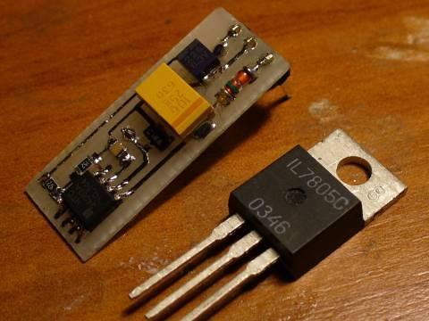
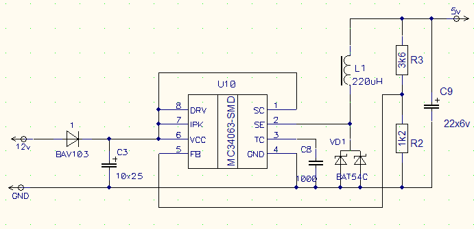
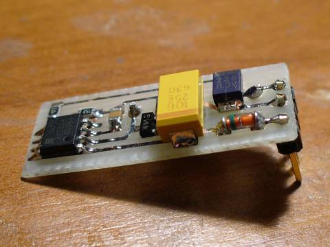
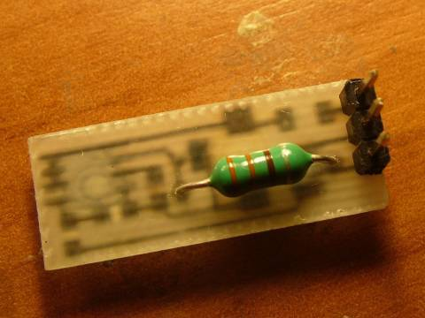

Понижающий импульсный регулятор (STEP-DOWN).
Как получить 5 вольт из более высокого напряжения? Конечно же при помощи «КРЕНки»! «КРЕНка», КР142ЕН5, или по-буржуйски, (LM)7805.
Одна трёхногая микросхема, пара конденсаторов, и телемаркет © :) Но не всё так шоколадно. Дело в том, что микросхема LM7805 является линейным стабилизатором напряжения. А это значит, что всё лишнее напряжение она высаживает на себе. То есть, при входном напряжении 12 В, она вынуждена обеспечивать на себе падение напряжения в 7 вольт. Умножьте это на ток хотя бы в 100 мА, и получите уже 0.7 Вт рассеиваемой мощности. При чуть больших токах или разнице между входным и выходным напряжениями без теплоотвода уже не обойтись.
Для того, чтобы не усугублять глобальное потепление, а также для экономии электроэнергии и энергии батарей, придумали импульсный понижающий регулятор (STEP-DOWN) :

Регулятор собран на широкораспространённой микросхеме MC34063. Схема практически один-в-один из даташита, убран лишь токоограничительный резистор:

Вот такая получилась красота:

Я нашлёпал таких с десяток, на 5 и на 3.3 вольта, и теперь везде использую их. На токах до 0.5 A ничего не греется, причём независимо от величины входного напряжения.

© AHTOXA, 2009.